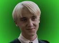

Selecione um personagem
-

-

- 
-

Harry Potter
Órfão desde bebê, Harry descobre aos 11 anos que é na verdade um bruxo e que seus pais foram assassinados por um poderoso bruxo das trevas chamado Lord Voldemort.